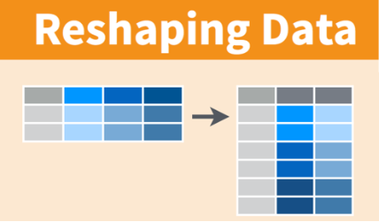
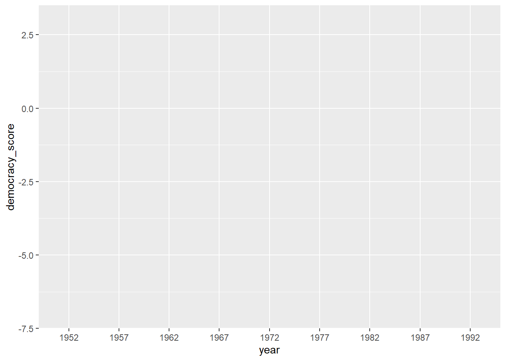

Converting to "tidy" data format

In this Section, we'll see how to convert a data set that isn't in "tidy" format (but rather is in "wide" format), to a data set that is in "tidy" format (or equivalently "long/narrow" format). Let's use the dem_score data frame we loaded from a spreadsheet in the previous Section but focus on only data corresponding to the country of Guatemala.
guat_dem <- dem_score %>%
filter(country == "Guatemala")
guat_dem# A tibble: 1 x 10
country `1952` `1957` `1962` `1967` `1972` `1977` `1982` `1987` `1992`
<chr> <dbl> <dbl> <dbl> <dbl> <dbl> <dbl> <dbl> <dbl> <dbl>
1 Guatemala 2 -6 -5 3 1 -3 -7 3 3Now let's produce a plot showing how the democracy scores have changed over the 40 years from 1952 to 1992 for Guatemala. Let's start by laying out how we would map our aesthetics to variables in the data frame:
- The
dataframe isguat_demso we usedata = guat_dem
We'd like to see how the democracy score has changed over the years in Guatemala. But we have a problem. We see that we have a variable named country but its only value is "Guatemala". We have other variables denoted by different year values. Unfortunately, we've run into a data set that is not in the appropriate format to apply the Grammar of Graphics and ggplot2. Remember that ggplot2 is a package in the tidyverse and, thus, needs data to be in a tidy format. We'd like to finish off our mapping of aesthetics to variables by doing something like
- The
aesthetic mapping is set byaes(x = year, y = democracy_score)
but this is not possible with our wide-formatted data. We need to take the values of the current column names in guat_dem (aside from country) and convert them into a new variable that will act as a key called year. Then, we'd like to take the numbers on the inside of the table and turn them into a column that will act as values called democracy_score. Our resulting data frame will have three columns: country, year, and democracy_score.
The gather() function in the tidyr package can complete this task for us. The first argument to gather(), just as with ggplot2(), is the data argument where we specify which data frame we would like to tidy. The next two arguments to gather() are key and value, which specify what we'd like to call the new columns that convert our wide data into long format. Lastly, we include a specification for variables we'd like to NOT include in this tidying process using a -.
guat_tidy <- gather(data = guat_dem,
key = year,
value = democracy_score,
- country)
guat_tidy# A tibble: 9 x 3
country year democracy_score
<chr> <chr> <dbl>
1 Guatemala 1952 2
2 Guatemala 1957 -6
3 Guatemala 1962 -5
4 Guatemala 1967 3
5 Guatemala 1972 1
6 Guatemala 1977 -3
7 Guatemala 1982 -7
8 Guatemala 1987 3
9 Guatemala 1992 3We can now create the plot to show how the democracy score of Guatemala changed from 1952 to 1992 using a linegraph and ggplot2.
ggplot(data = guat_tidy, mapping = aes(x = year, y = democracy_score)) +
geom_line()
Observe that the year variable in guat_tidy is stored as a character vector since we had to circumvent the naming rules in R by adding backticks around the different year columns in guat_dem. This is leading to ggplot not knowing exactly how to plot a line using a categorical variable. We can fix this by using the parse_number() function in the readr package and then specify the horizontal axis label to be "year":
ggplot(data = guat_tidy, mapping = aes(x = parse_number(year), y = democracy_score)) +
geom_line() +
labs(x = "year")Figure 2: Guatemala's democracy score ratings from 1952 to 1992
We'll see later how we could use the mutate() function to change year to be a numeric variable instead of after we have done our tidying. Notice now that the mappings of aesthetics to variables make sense in the figure:
- The
dataframe isguat_tidyby settingdata = guat_tidy - The
xaesthetic is mapped toyear - The
yaesthetic is mapped todemocracy_score - The
geom_etry chosen isline
Task
Convert the dem_score data frame into a tidy data frame and assign the name of dem_score_tidy to the resulting long-formatted data frame.
Use the gather function and think carefully about what each argument should be.
dem_score_tidy <- gather(data = dem_score,
key = year,
value = democracy_score,
-country)
head(dem_score_tidy)# A tibble: 6 x 3
country year democracy_score
<chr> <chr> <dbl>
1 Albania 1952 -9
2 Argentina 1952 -9
3 Armenia 1952 -9
4 Australia 1952 10
5 Austria 1952 10
6 Azerbaijan 1952 -9Task Convert the life expectancy data set you created above into a tidy data frame.
Again, use the gather function.
life_exp_scores <- read_csv("https://moderndive.com/data/le_mess.csv")
life_exp_tidy <- gather(data = life_exp_scores,
key = year,
value = life_exp,
-country)
head(life_exp_tidy)# A tibble: 6 x 3
country year life_exp
<chr> <chr> <dbl>
1 Afghanistan 1951 27.1
2 Albania 1951 54.7
3 Algeria 1951 43.0
4 Angola 1951 31.0
5 Antigua and Barbuda 1951 58.3
6 Argentina 1951 61.9